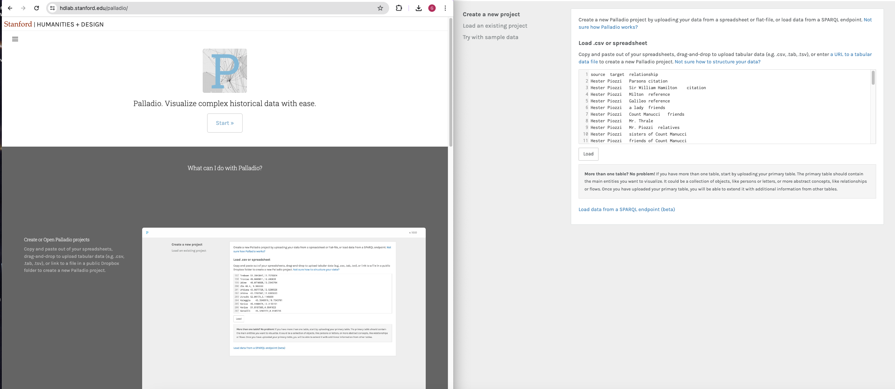
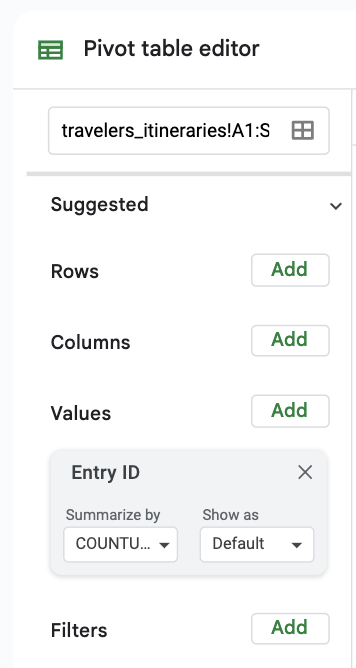
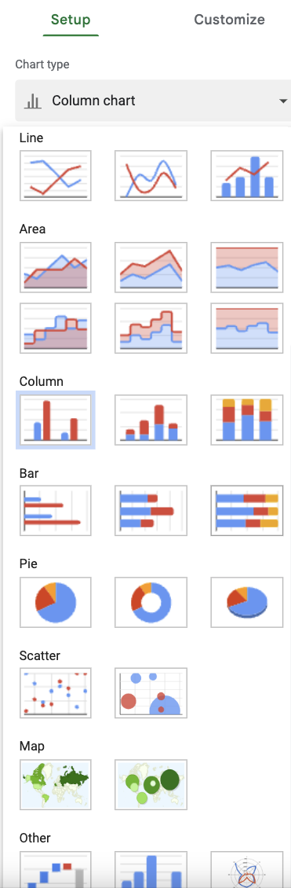
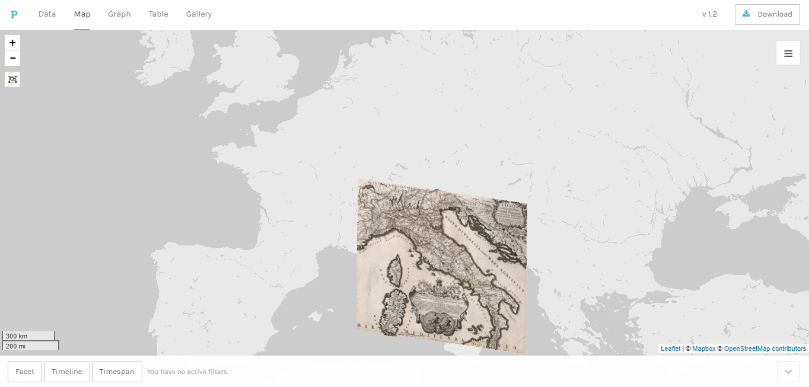

To browse this project, you need a device with a bigger viewport. Please return to this page when you have access to a laptop or desktop computer, or try to resize your browser window.
Practicum 1. Examples of Digital Humanities Projects and Introduction to the Grand Tour Explorer
Part 1. Introduction (30 Min.)
Discussion:
What do we know about the digital humanities?
What do we think the definition of digital humanities is? The purpose? What projects have we encountered, either at this university or elsewhere?
Digital humanities (broadly speaking) describes the application of digital technologies to exploring traditional humanities questions. Digital history emphasizes the use of digital methodologies in collecting, navigating, annotating, presenting, and analyzing primary and secondary historical sources and arguments.
Examples:
Data Collection and Navigation: WorldCat (https://worldcat.org), GoogleBooks (https://books.google.com/), VIAF (Virtual International Authority File, https://viaf.org), World Historical Gazetteer(https://whgazetteer.org/)
Presentation and Annotation: Pelagios (https://pelagios.org/), Medici Archive Project (MAP, https://www.medici.org/), Enslaved: Peoples of the Historical Slave Trade (https://enslaved.org), Smithsonian Digital Volunteers (https://transcription.si.edu)
Presentation and Analysis: Orbis (https://orbis.stanford.edu/), Martha Ballard’s Diary (https://dohistory.org/diary/), Stanford Literary Lab Pamphlets (https://litlab.stanford.edu/pamphlets/)
Note: Each of these approaches might correspond to a different stage of the research process or desired output and audience.
Often, historical data is collected and presented in several general forms.
Examples:
Textual Data: Early Modern Letters Online (http://emlo-portal.bodleian.ox.ac.uk)
Spatial Data: DECIMA (https://decima-map.net/)
Network Data: Six Degrees of Francis Bacon (http://www.sixdegreesoffrancisbacon.com/)
These different presentations of data rely on different underlying structures, as well as platforms. The end goal of a project guides the initial collection and categorization of data. Digital tools can be used to explore data but still rely on a foundation of a “historical research question,” such as what were the effects of X on Y over time?
Activity:
Take a couple of minutes to explore one of the linked projects. Working in pairs, formulate what you think the foundational historical question might have been. Can you find it somewhere in the project itself? How has it been presented or highlighted visually or textually?
Discussion:
Invite a subset of students to share the results of the activity.
What does it mean to consider historical information as data? What is gained or lost as a result?
What other kinds of data might be mined from historical sources?
Part 2. The Grand Tour Explorer (20 Min.)
The Grand Tour Explorer represents the secondary source A Dictionary of British and Irish Travellers in Italy, 1701-1800, compiled from the Brinsley Ford archive by John Ingamells (henceforward the Dictionary), which was published in 1997 based on the primary source material gathered from a variety of archives.
Activity:
Pass around a physical copy or direct students to pages from the Dictionary (https://books.google.com/books?id=7Z0_EAAAQBAJ), giving students a minute or two to read.
Discussion:
What is the difference between a primary and secondary source?
What are the advantages of a physical reference material?
How do you think a digital tool might translate or improve the experience of a reference material?
The foundational object of the Grand Tour Explorer is the entry, which sometimes (but not always!) represents an individual traveler. Within that we have subobjects shown on an individual entry page, including biographical details (left) and tours (right) (fig. 1).
Fig. 1.
The Grand Tour Explorer parses the data found in the dictionary into these different categories, represented by different sections of the entry page:
The biography
The narrative
The tours
The notes
The process of parsing has been done for us by the Explorer, as has some presentation. Any analysis is up to us!
Discussion:
What kinds of questions can you imagine based on this data?
Sample of statements from historians about the Grand Tour:
“There was no cult of the countryside: tourists travelled as rapidly as possible between major cities, and regarded mountains with horror, not joy” (Jeremy Black, Italy and the Grand Tour, 3).
“While major Italian urban centres continued to be appreciated mostly as repositories of past glories, as early as 1700 Turin was perceived by many foreign observers as an exception on the Italian peninsula – a place of great social relevance by virtue of its political and cultural modernity” (Paola Bianchi, “The British at the Turin Royal Academy: Cosmopolitanism and Religious Pragmatism,” in Paola Bianchi and Karin Wolfe, eds., Turin and the British in the Age of the Grand Tour, 91).
“The length of time spent in ‘making the tour’ fell over the course of the century, but even in the early nineteenth century many tours lasted six months at the very least, and the costs could be prohibitive” (Rosemary Sweet, Cities and the Grand Tour: The British in Italy, c. 1690–1820, 2).
Discussion:
One of the best starting points with DH is hypothesis testing. How would you start to explore some of these statements using the Explorer interface?
Example of free-search for “mountains,” “countryside,” “money”, “price” (fig. 2).
Fig. 2.
Free-search for “modern” in combination with place search “Turin” (fig. 3).
Fig. 3.
Range of years search for “1700” to “1750” (fig. 4).
Fig. 4.
What might these searches be capturing or missing?
Writing history is often a matter of balancing the complexity of reality with “selecting representative examples.” Searching in this manner turns up a number of individuals who could be used as cases to help prove an overall argument; however, we might have trouble evaluating how correct that argument is.
Part 3. Using the Explorer (30 Min.)
The last example also represents the difficulty of representing “change over time,” which is a crucial component of a sophisticated historical argument. Just like we break reality into selected examples (often called “case studies”), we can also break time into select chunks (often called “timeslices”).
Activity:
Come up with a method you would use to measure the number of a type of traveler over a period of time. You may select timeslices (using a before, during, and after approach), or you may use regular units (such as decades). You can also limit your search to travelers with a certain attribute (such as women, painters, military men) or a certain place. Aim for at least three numbers, and fill out a table in the format of table 1.
Time
Number of Entries
DATE-DATE
#
DATE-DATE
#
DATE-DATE
#
Table 1.
Discussion:
Invite a subset of students to share the results of the activity.
What choices did you make and why?
How did the Explorer guide, aid, or hinder your desires?
How would you write or state your research question? What would be a preliminary answer?
Assignment:
Establish a hypothesis regarding the experience of the Grand Tour based on your reading for the second session—for example, “travelers went to Rome for religious reasons,” or “women did not stay in Naples.” List five search terms that might help you find supporting evidence for an argument. Consider the advantages and disadvantages of different types of searches. Write a short response (five hundred words) describing your findings among the entries and whether you think they ultimately support or disprove your hypothesis.
Practicum 2. Data & Quantitative Methods: Sort, Filter, Reformatting, Formulas, Pivot in Google Sheets
Reading:
Selections from Lady Anna Riggs Miller’s Letters from Italy (1776), 174–95. [https://wellcomecollection.org/works/yk4f9tms]
Part 1. Introduction (15 Min.)
Note: Remind all students to practice accessing Google Sheets prior to class meeting. And another important reminder: Google Sheets is an application that is updated and changed often, including with the addition of new features. Most of what is presented here is based on the 2024 version except some features that are different and/or augmented. Use what follows as a baseline, keeping in mind that how things work for students might differ from Mac to PC.
Review:
Last week, we discussed the meaning of digital humanities, types of digital history projects, and their uses. We began using the Grand Tour Explorer to explore the biographical dictionary of British travelers. We tested hypotheses provided by historical secondary sources by running some basic searches.
Discussion:
Discuss last session’s assignment in small groups.
While case studies and timeslices allow us two methods of making a complex reality approachable, they require conscious choices on the part of the historian. That choice can be educated by primary and secondary sources, or it can be earned in years of gaining a professional “sense.” By exporting large amounts of data from the Explorer, we can read many entries at a distance, allowing us to explore the overall shape of the data before moving to the next step of historical work.
Additionally, we can adapt the data to better answer our questions, essentially increasing or decreasing the detail (frequently called “granularity”) that we wish to capture. See, for example, statements about positive and negative impressions from the reading:
“Tourist complaints about the major routes in northern Italy, those from Turin to both Genoa and Parma, and from Milan via Parma to Bologna, were limited. Indeed, the road system was best in Piedmont and Lombardy, both territories with reasonably effective government. The Venetian system was not regarded in as favorable a light” (Jeremy Black, Italy and the Grand Tour, 83).
We could imagine adding a “negative” or “positive” sentiment value for individual locations based on reading entries, thereby grouping entries into broader categories (as sentiment analysis seeks to do!). Additionally, we can add new “quantitative attributes” by performing basic calculations using the provided data.
(Intro and specify that readings will include Anne Miller)
Part 2. Sorting, Reformatting, and Filtering in Sheets (30 Min.)
Most digital humanities data will be in a “TSV” (tab-separated value) or “CSV” (comma-separated value) format. This format is easily translated between Excel, Google Sheets, Google OpenRefine, and many other programs.
Begin by running a search in the Explorer for travelers with “Travel date” in the range of years from 1770 to 1775 (around the same time as Lady Anne Riggs Miller) (fig. 5).
Fig. 5.
At the top right of the screen, select “Export Results” (fig. 6). Move the resulting zip file somewhere that you will be able to find it easily.
Fig. 6.
Open a new file in Google Sheets. We will use this data to learn our way around Sheets.
We can have multiple sheets within a single file. Click on the “+” icon at the bottom left of the page. Create two new sheets, and name the sheets “Travelers,” “Itineraries,” and “Life Events.” Opening the exported files in a basic text editor (such as TextEdit or Notepad), select all the contents and copy and paste them into the corresponding sheets (fig. 7). Note: You can also import the data directly by going to File > Import > Upload. It will be necessary to set the separator type to “Tab” as the files are in TSV format.
Fig. 7.
Because we already limited our search in the Explorer to travelers between 1770 and 1775, we will only have data for entries which have records for one or more “tours” that fall within that date range. The “Travelers” and “Life_Events” sheets will provide data for only those travelers.
Each of the sheets corresponds to one another by means of a “unique identifier,” in our case the “Entry ID”. A visualization program is able to quickly match data across the tables as long as the unique identifiers are written exactly the same across sheets. This means no variation in spacing, capitalization, or punctuation.
Discussion:
Why use identifiers rather than full names?
Consider sharing Patrick McKenzie, “Falsehoods Programmers Believe about Names” (https://www.kalzumeus.com/2010/06/17/falsehoods-programmers-believe-about-names/)
We will now explore our data and practice the following operations:
Sorting data
Reformatting data
Filtering data
The data in the “Travelers” sheet begins in “ascending” order based on the “Entry ID,” which roughly follows the organization of the book by “alphabetical order.” Let’s instead resort the data by birthDate. This means that travelers with the earliest birth date will be located at the beginning of the sheet.
First we want to make sure to keep our first row with the column names where it is (our header row). We can do this by opening the “View” column and selecting “View > Freeze > 1 row” (fig. 8).”
Fig. 8.
Now when we resort the data the header will remain where it is.
Select the birth date column by clicking on the corresponding letter at the top of the sheet (it should be column D).
Open the “Data” menu at the top of the page. We have several options here:
“Sort sheet” will sort the entire sheet using the selected column. “Sort range” will just reorder the selected column.
A->Z and vice versa offers us the ability to sort in “ascending” (A->Z) or descending (Z->A) order. This will also work with numerical data, as we have in the birth date column (fig. 9).
Fig. 9.
Try each combination of options (using Edit > Undo or Ctrl + Z or Cmd + Z after each sort). Which is the one we want to more easily view our travelers from “youngest at 1720 to oldest”? Note: Be careful about accidentally using the range option when you mean to use sheet; this will break the logical connections established between entries and their “attribute” data—that is, the first and following columns.
Let’s navigate to the “Itineraries” sheet. The coordinates are provided in the format of “Latitude, Longitude” because this is the format that best works with the “Palladio visualization platform.” Other visualization platforms (Gephi, Tableau) will require, however, that we have longitude and latitude in separate columns. We can separate this column now.
Begin by duplicating our “coordinates” column. We can do so by right-clicking the column, selecting “Insert 1 column right (fig. 10).”
Fig. 10.
We then select the coordinates column by clicking on the column name row and copy and paste the data into the new, blank column. We could just perform our operations directly on the coordinates column; however, it is generally a good idea to add new columns and preserve each stage of data manipulation. After all, we might be moving between platforms that require different formats or need to briefly revert without undoing other changes. We can name this new column dupCoordinates (fig. 11).
Fig. 11.
Let’s move our “dupCoordinates” column to the end of our sheet. When we split the data, we want to make sure we don’t accidentally overwrite any other data. You can move a column by clicking on the letter at the top of its first row, then when the hand icon appears, by clicking and dragging to the desired location.
Keep the dupCoordinates column selected, and open the Data menu. Select “Data > Split text to columns” (fig. 12).
Fig. 12.
In general, Sheets will guess what character indicates where you would like to separate the data in the “Separator” window that opens near the bottom of the screen. It will remove the separator and distribute your data to a number of columns equal to the number of instances of the separator character. If you would like to be sure, you can click on the “Detect automatically” and replace it with the “Comma” option.
Now we can rename the newly split columns as “latitude” and “longitude” (fig. 13).
Fig. 13.
Let’s move to the “Life Events” sheet. Perhaps we want to quickly view only those travelers for whom there is some marriage data. We could sort the “lifeEvents” column alphabetically using our previous method, but it is also possible to filter the data.
Select the lifeEvents column by clicking on the column letter above its first row and then navigate to “Data > Create a Filter” (fig. 14).
Fig. 14.
Next to lifeEvents, you should now see a green arrowhead pointing down (fig. 15).
Fig. 15.
Click on this to open the “Filter” menu. The filter menu consists of several options. We can sort here, but doing so will sort the range rather than the sheet. We are interested instead in “Filter by condition” and “Filter by values.”
The default is for all values to be shown. If we wish to toggle this option, we can either click “Select all” or “Clear.” Try clicking “Clear.” You should see the checkmarks to the left of each value disappear. Click OK.
The filter has hidden all unselected options (fig. 16).
Fig. 16.
Now, open the filter once more and click on “marriage.” You should see the checkmark reappear. Click OK.
We should now see only the “Life Events,” which match to lifeEvents: “marriage” (fig. 17).
Fig. 17.
Note that this operation only affects the Life Events sheet; other sheets will continue to show all data.
Discussion:
Do you notice anything about the people who have an associated marriage? What impressions do you have looking over these entries versus the data as a whole?
In addition to “marriage,” what different values exist within lifeEvents? How do you think they were chosen?
To remove a filter, navigate to “Data > Remove filter.”
What if we want to have multiple filters at one time? For example, filtering to show everyone with an associated marriage for whom there is also an eventsDetail2 indicating a known spouse. The easiest way to do this is known as “filter view.”
Select the entire header row by clicking row number 1 on the left of the sheet. Then navigate to “Data > Filter views... > Create new filter view” (fig. 18).
Fig. 18.
The column and row names turn black, indicating that a filter view is overlying our data (fig. 19).
Fig. 19.
If you would like, you can name the filter view by clicking “Name: Filter 1” at the top of the sheet. Let’s call this filter view “Known marriages.”
If we have selected the header row correctly, we should also see a downward-facing arrowhead to the right of every column name (fig. 20).
Fig. 20.
Let’s select the one next to lifeEvents and filter only for the value “marriage” once more.
Now we want to adjust the filter view to hide all marriage lifeEvents entries for which the value field is blank or clearly not a name. How would you do this?
Select the arrow next to the eventsDetail2 column name and deselect the (Blanks) value (fig. 21).
Fig. 21.
We now have a filter view for “marriage” lifeEvents entries with a known second party, as recorded in eventsDetail2
We can exit out of the filter view by selecting the X at the top right of the sheet next to the settings gear. We can reapply this filter view at any time by navigating to “Data > Filter views... > Known marriages” (fig. 22).
Fig. 22.
Using filter view, we can quickly select data to alter it, add to it, or remove it from our overall data set.
For example, with our “Known marriages” filter view on, try adding a new column and name it knownMarriage (fig. 23).
Fig. 23.
We are going to make this a Boolean value, meaning “TRUE” or “FALSE.” Enter “TRUE” in the first entry row after the header and then select the cell (fig. 24).
Fig. 24.
While the cell is selected, you should see a small blue box in the right corner of the selected cell. Select the rest of the column below by scrolling down, holding the Shift key, and selecting the final cell in the column. Press CTRL + D or CMD + D. Every cell should now read “TRUE.”
Remove the filter view.
Fig. 25.
We can now see that we have marked every entry as TRUE that showed in our filterview.
Fig. 26.
How would you replace the blanks in the knownMarriage column of figure 26 with an entry of “FALSE”?
Part 3. Formulas, Operations and Pivot Tables (30 Min.)
We’ve now experimented with sorting, reformatting, and filtering data. Let’s now try applying these skills to a more complex problem and experiment with using “formulas.” What if instead we wanted to figure out the “age” of a traveler at “time of travel”? Which pieces of information in the sheets can we use to determine this?
We can break our more complex question into the following steps:
Filter for travelers with both a known birthDate and startYear.
Relocate the birthDate data and startYear columns to the same sheet.
Subtract the birthDate data from the startYear for each trip to find the age at the start of travel.
We have two pieces of data that we need to put in conversation: the “birthDate” column in the “Travelers” sheet, and the travel dates (represented as startYear and endYear). Let’s use startYear to determine the age of travelers when they began their trips.
We’ll need to make a copy of the birthDate information on the “Itineraries” sheet. We can do this by using the “VLOOKUP()” formula.
On the Itineraries sheet, create a new column titled “birthYear.”
Click on the first empty cell in the column and write “=VLOOKUP.”
Once we’ve begun a formula, sheets will provide a drop-down to display more information (fig. 27). In figure 27, we can see that the correct format is “VLOOKUP(search_key, range, index, [is_sorted]).
Fig. 27.
The last value is in brackets, meaning it is optional, but the remainder values are mandatory.
In this case, we want the following:
Search_key: The Entry ID column of the “Itineraries” sheet.
Range: The whole of the “Travelers” sheet.
Index: The column index (meaning the distance from the leftmost column as column 1) of the desired value, so in this case, the number corresponding to the birthDate column of the “Travelers” sheet.
Is_Sorted: FALSE will return an exact match, while TRUE will return an approximate match.
Any cell in a sheet has a “reference value” marked by its column (represented by the letter at the top of the sheet) and its row (represented by the number at the side of the sheet). We use these reference values to fill out the formula.
For the “search_key,” we want to indicate the whole of the Entry ID column, except for the header. We can indicate this with “A:A,” which indicates the whole column. Once we have entered this into the formula, we also see sheets color the corresponding values that have been selected. Alternatively, if we are ever unsure how to indicate our desired values, we can click and drag to select them on the sheet, and see the formula autopopulate with the corresponding value.
Next we want to enter the “range “for the formula, which is located on the other sheet. In order to indicate a different sheet, we can either navigate to that sheet and select the data with our cursor, or enter the following: “Travelers!A:M.” This indicates that we want to search the entirety of the “Entries” sheet (columns A through M). The VLOOKUP function automatically searches the first column.
Next we want to enter the “index.” In this case, we want the birthDate column of the Entries sheet, which is located in the fourth column. We put a “4.”
Finally, we want to make sure we are only getting an exact match, so we will type FALSE.
In sum, our formula should read “ =VLOOKUP(A2:A,Entries!A:Z,4,FALSE)” (fig. 28).
Fig. 28.
We hit enter and . . . get a blank cell! (fig. 29). What happened? If we look at the “Travelers” sheet, we see that the first entry, “Aberdeen,” does not have an associated birthDate.
Fig. 29.
In this case, the formula returns a blank cell, which is correct. We can fill down with a formula the same way as we did with a single value. Select the cell with your formula, hold SHIFT, select the final cell and hit CTRL + D or CMD + D.
We have successfully duplicated the birthYear information onto the “Itineraries” sheet. Our final step is to actually find the “age” of the traveler during a trip, which we can do by subtracting the birthYear from the startYear in the Itineraries sheet.
Let’s start a new column titled travelAge on the “Itineraries” sheet (fig. 30).
Fig. 30.
We can then add a simple subtraction formula into the first cell: =F3-C3, where F3 indicates the first nonheader value of the startYear column, and C3 indicates the first nonheader value of the birthYear column.
Fill down the column with that formula (fig. 31).
Fig. 31.
For travelers whose birth years are not known, you will see some crazy results! How could we use filters to remove this data or, better yet, create a filter view for only travelers with known birth dates?
We have successfully found the age of travelers during their trips! In the next session, we’ll explore how to do some basic visualization of this information, but using formulas in sheets, we can also figure out the following:
The median age of travelers between 1770 and 1775
The minimum age (the youngest traveler)
The maximum age (the oldest traveler)
The ages of Anne Miller during her travels
What if, instead, we wanted to know how representative Anne Miller was and where travelers her age generally went? In this case, we might use a “pivot table,” which you’ll get more of a chance to explore in the assignment for this session.
A pivot table summarizes our data. We can create one by selecting the entirety of our Itineraries sheet (CTRL + A or CMD + A) and going to Insert > Pivot table (fig.32).
Fig. 32.
We make sure the Data Range contains our data, and we open it in a new sheet.
Our view will automatically switch to the new sheet, which we can name “Itineraries Pivot” (fig. 33).
Fig. 33.
In the Pivot Table Editor on the right-hand side, we are provided with a number of options (fig. 34).
Fig. 34.
We’ll begin by clicking “Add” next to the “Values” field. Select “Entry ID,” and then under “Summarize by,” choose “Count Unique” (fig. 35).
Fig. 35.
On the left, our Pivot Table now shows the total count of unique values in the Entry ID column.
In the same way we added “Values,” we can experiment with adding different “Rows” and “Columns,” representing our independent and dependent variables.
We can also use “Filters” and “Sort by” to show our data in more readable ways, such as removing all the travels for which there is no known travelAge and sorting in descending order to show the highest frequency instances at the top of our Pivot Table.
Remember that we are working with a subset of the data, so the answers below hold true only for travelers who traveled within the 1770–75 window that we used to export the data. Try setting up the following:
Which place saw the most travelers who were exactly 20?
Which location has the largest age difference among travelers? The highest median age?
Was there a significance in age difference between male and female travelers for various places? Note: This will require repeating the above operations to add the gender column from the Travelers to the Itineraries sheet.
Can you see where changing the “granularity” of our data might be helpful? What if we added an ageRank column that let us quickly group travelers by decade (i.e., “21–30” or “60+”) rather than individual age?
Assignment for next section, ahead of Practicum 3:
The hot summer months could be difficult for tourists, as Lady Anne Riggs Miller recounts, with the mosquitos in the Veneto. Where did they go to escape the heat? Your assignment is to continue to work with our modified age data for travelers between 1770 and 1775 to find where travelers tended to go in the summer and whether there was a significant difference for young travelers versus older travelers. For the purpose of this exercise, assume that the summer lasts from June through September, and include travels that started or ended in those months. You can use either Sheets or the Explorer to answer questions 1 and 2, but you will need to use Sheets to answer question 3. Summarize your process, and hypothesize why you might see the results that you see.
Where were the top five destinations for travelers of all ages during all times of the year?
What were the top five destinations for travelers during the summer months? Do you see any additional outlier locations that became far more popular or less popular?
What were the top five destinations in summer for travelers under age 50? What were the top three for travelers over age 50? Hint: for determining whether someone is under or over age 50 at the time of travel, you might use either the Filter > By condition or the formula =IF(___>=50, “TRUE”, “FALSE”) (Filling in the blank!)
Practicum 3. Networks and Graphs in Palladio
Reading:
Hester Lynch Piozzi, Observations and Reflections Made in the Course of a Journey through France, Italy, and Germany (1789): 187–215.
Part 1. Introduction (10 Min.)
Review:
In the last session, we practiced downloading, viewing, and manipulating data in Google Sheets. The assignment reinforced how many tasks can be performed outside and inside of the Explorer.
What observations did you make about the role of seasonality and age in travel?
The Explorer can give us information about individual travelers; however, it can also suggest important connections between travelers.
For example, if we look up Hester Piozzi, we see that her travels are shown in the column on the right, beneath the minimap. We see that she began her travels in Turin in October of 1784. If we click on that trip, we are taken to a screen where we can see every other traveler present in Turin on that date (fig. 36).
Fig. 36.
In a way, “copresence” establishes a kind of relationship between the travelers.
Often, the best way to represent relationships in data is a network model. A network model generally consists of “nodes” (often represented by shape objects) and “edges” (often represented by lines between shapes). We can represent the circle of British travelers in Turin that October in two forms:
A bimodal network connects two varieties of things and therefore includes more than one type of node: so, a central node of “Turin” is connected by edges to many other nodes representing individual travelers.
A unimodal network connects the same varieties of things and therefore includes only one node type: so, presence in Turin in October becomes the edge that connects the travelers to each other.
The two models represent the same data, just in two different ways: in the first, Turin is represented as a node; in the second, it has been “collapsed” into the edges.
But is it safe to presume that the travelers in Turin did, in fact, have some kind of relationship to one another? We are using copresence as a proxy for other types of relationships—social, conversational, transactional—but we need to critically consider the accuracy of a chosen proxy.
If we search within this copresent group of travelers in Turin in October 1784 by Mentioned names: “Piozzi,” the only other match is presumably a family member—meaning the other entries do not specifically support that the individual met and interacted with Hester Piozzi, at least as recorded by the assemblers of Ingamells’ biographical dictionary.
So far we have taken all of our data from the Explorer; however, the Explorer can also be put into dialogue with other sources. This week we will explore how to interpret a primary source into a “data table” and its use for building “network models.”
Part 2. Hester Piozzi’s Imagined Network (40 Min.)
When Hester Piozzi traveled, she did so with a wide network—not just other Brits and Italians but a series of literary, historical, and imagined companions. One of the great virtues of networks is that they allow us to include many different types of information in one data table—in this case, friends, real and imagined.
Activity:
In small groups, take the next ten minutes to highlight every reference to a person’s name that you find in the week’s reading and add a small annotation regarding the relationship Piozzi has with them.
Is she citing them, referring to them, or acquainted with them?
Discussion:
Was it always clear when a person was being referenced? Why or why not?
What categories did you decide to use for types of people or relationships, and why?
A network model generally requires two types of tables, an “edge table” and a “node table.”
Each row in a node table represents a distinct entity that we will represent as a node; in this case, each person’s name and one or more attributes consistently associated with them.
Each row in an edge table represents an instance of a relationship and the individual with whom that relationship takes place. This can take the form of a directed or undirected relationship, such as the directed relationship of a buyer and seller or the undirected relationship of friendship.
Take a few minutes now to begin a new spreadsheet, adding your information into row and edge tables (represented here as different “sheets” within the document). Use the following formats:
Node Table:
name
attribute
E.g. Hester Piozzi
author
Edge Table:
source
target
relationship
E.g. Hester Piozzi
Lady Cowper
friends
In creating Hester Piozzi’s imagined network, we are creating what is known as an “ego network,” meaning a network more or less revolving around a single individual. We can see that in the edge table, we may often put Hester Piozzi as the source or target of a relationship. Note: Which node should be the “source” or the “target” of a relationship is an interpretive choice. It will not make much difference for a simple Palladio visualization but will have more analytical weight when performing more complex network operations. Just consider this practice for now!
We can add as many attributes as we might like to the nodes and edges. When choosing your categories, you will frequently need to balance the need for specificity with generality, for accuracy with ambiguity. To be meaningful, our categories will generally need to encompass multiple nodes or edges.
In some cases, you might want to include multiple pieces of information in a cell; we can do so, but we will need to designate each piece as such by using a standardized separator, such as a semicolon.
The more categories we build into our data construction, the more “variables” we can adjust in our visualizations and the more complexity we can add to our explorations. Let’s add an additional “gender” column to our nodes table and fill it to the best of our ability.
Where can we infer gender? Where does it become more difficult?
Part 3. Visualizing Piozzi’s Network (30 Min.)
Once we have finished entering information for Piozzi’s network, we can experiment with visualizing the results in Palladio (https://hdlab.stanford.edu/palladio/), a Stanford-created platform for the visualization of historical data.
Navigate to Palladio’s main landing page (fig. 37), and choose to start a new project.

Fig. 37.
Let’s begin by copying and pasting our data from our edge table into the box and clicking “load.” Palladio will parse the different columns of data automatically. Note: Try not to include empty rows or columns when inputting your data into Palladio.
We can provide a title for the project and a name for the table. Let’s call the project “Piozzi’s Network,” and name the table “Edges” (fig. 38).
Fig. 38.
We can click on the source column (fig. 39).
Fig. 39.
This will open a dialogue box in the same window, but this time, we will go down to the “Extension” field and click “Add a new table” (fig. 40). This opens a blank field similar to the one with which we began. This time, copy and paste the entirety of the Nodes sheet into the field and click “Load.”
Fig. 40.
When we click back to the main Data screen, we see that both tables are now present (fig. 41).
Fig. 41.
Let’s rename the second table “Nodes.” A small arrow pointing to the left from the Nodes should now indicate the connection between the “name” column of the Nodes table and the “source” table (fig. 42).
Fig. 42.
Click on the “target” column, and link it to the Edges table as well. This time we don’t have to reload the Nodes table. We can simply choose it from the dropdown menu to the right of “Extension.”
Do we see any red or yellow arrows? This means the data has not been able to correctly match. If we take a look, we will likely find that there is some slight difference in the way that a name has been input into one table versus the other. Palladio will interpret any variation in spelling, punctuation, or capitalization as a different value. To correct the data, we will have to change it in the original sheet and reload it into Palladio.
We should see a red dot next to the relationship category in the Edge table. Let’s click there now.
The window that opens gives us several options of data to alter, including the column name, the data type, and—to the right—special characters. In this case, Palladio may correctly guess that we have multiple values in single cells. To correctly separate these values (i.e., to have Sir William Hamilton count for both “expert” and “author”), we can put the semicolon in the “Multiple values” field. Click “Close.”
At the top left of the screen, click on the “Graph” tab. This will open Palladio’s network visualization tool (fig.43).
Fig. 43.
We see a window on the right with the following options, which we will fill out as shown in figures 44 and 45.
Source: this means the starting point of an edge or the initiator of a connection. Choose source.
Fig. 44.
Target: this means the end point of an edge or the recipient of a connection. Choose target.
Fig. 45.
Highlight: The highlight box under both source and target will change the color of nodes from that category. For now, let’s check the highlight box under the source.
Show links: This toggles the visibility of the edges. Keep it checked for now.
Size nodes: This scales the nodes on the basis of a calculated value. Check it, then select “Number of Edges.” This means the more edges a node is a part of, the bigger it will be.
After altering these settings, you can hide the right box by clicking the Setting button at the top, represented by three parallel horizontal lines. The end result is the network illustrated in figure 46.
Fig. 46.
Notice how the network does not show us any information different from that which we entered. An ego network visualization in particular will tend to illustrate the data rather than provide more complex analysis. We can also see where there may be mistakes in the data. Can you spot any here?
We can begin to explore further by clicking the Facet button at the bottom left of the screen (fig. 47). This will open an additional window where we can apply filters in a similar manner to the filters found in Google Sheets.
Fig. 47.
Click on the dropdown window next to “Dimensions” to bring up some possible filters. Select name, relationship, and attribute.
We can now see the possible options for each category, as well as the number of entries that fall within. Try clicking a value within one of the categories. We see both the numbers in the other categories and the visualization above reflect the selection (fig. 48).
Fig. 48.
It’s important to note that, because our main table is the Edges table, we see “numbers of edges” rather than “number of nodes” (i.e., the number next to attribute refers to the number of relationships rather than individuals).
We can download our complete data setup as a JSON file at any time by clicking the “Download” button at the upper right-hand corner of the screen. Clicking download under the Graph window will download a .svg image file of the network.
Discuss:
What types of relationships were most common in Piozzi’s writing?
Who did Piozzi have relationships with in person versus figuratively? How do these two networks compare?
Now that we have visualized the data, what changes would you have made in your data structuring or in your decision-making process regarding categorization?
Did you find that the visualization brought to light things you didn’t otherwise realize? Or did it show you things you already knew?
How did the overall process of interpreting the primary source as data change your relation with it?
Who did we “recover” from the primary source? How does this present a picture of the Grand Tour different from the one presented by the Explorer alone?
Assignment for next section, ahead of Practicum 4:
How does Hester Piozzi’s network of mentions in the Explorer compare to the network we assembled by hand?
Search the Explorer for “Mentioned names: Piozzi,” and export the data.
Input the Travelers.tsv file into Palladio. Note: Most programs will extrapolate a nodes table when given only an edge table, which is how we will be using our Travelers data.
Indicate the multiple values wherever they occur in the data (see, e.g., “matchedMentions”).
Set up a network of travelers (travelerNames) as connected by mentions in their entries (matchedMentions).
(Briefly) explore and answer the following (~200 words) with an image of your Palladio network:
Moving between the Explorer entries and the visualization, does this seem like a faithful depiction of a social network? Why or why not?
Where do you see potential issues for disambiguation or deduplication? How could we adjust our data to improve the visualization?
Try uploading and linking the “Life Events table” (by way of the entry ID column). What new dimensions have we added to our analysis?
Practicum 4. Spatial Data and Point Maps in Palladio
Note: This is an intermediary practicum that builds on the skills of preceding lessons. Steps such as uploading data into Google Sheets and Palladio are presented in an abbreviated form, asking students to recall and reapply their prior experience. In a classroom setting, I would anticipate that students will complete tasks with different timing and levels of difficulty. This is a great opportunity to prompt peer mentoring in small groups. Additionally, I would recommend implementing “checkpoints” where students can compare their work to the provided demo sheets to troubleshoot their own implementation.
Reading:
Joseph Addison, Remarks on Several Parts of Italy (orig. 1705) [https://quod.lib.umich.edu/e/ecco/004846589.0001.000?view=toc]
Part 1. Introduction (10 Min.)
Review:
We have now practiced working inside and outside of the Explorer, as well as building our own network tables and visualizations.
What observations did you make about Piozzi’s network?
How likely does it seem that travelers located in the same place at the same time would have interacted (based on the data and based on your own travel experience)?
While a network model allows us to treat space as a node or edge, we may decide that our questions are best addressed by maintaining and representing “spatial data” as such. This is often the case for questions where space itself might be an important variable, as in the following questions:
Why did travelers tend to congregate in Turin?
Did architects follow different itineraries than did artists?
How many travelers reached the South of Italy, and where did they go?
Only by representing the spatial factor can we get a sense of how travelers followed or diverged from set itineraries. Similarly, space in visualizations can help to convey the experience of travel across real geography.
“Geocoding” data refers to matching an object with a set of modern latitude and longitude coordinates. If we take a look at the Explorer, we see that the travels of individual travelers have been geocoded for us and are presented as a part of the dynamic map visualization (figs. 49, 50).
Fig. 49.
Fig. 50.
If we export data and take a look at the Itineraries sheet, we see what this looks like in the data. Each row contains a location and its coordinates linked by way of an Entry ID to a row on the Travelers sheet (fig. 50).
Fig. 51.
Part 2. Measuring Addison’s Guidebook (30 Min.)
Scholars often cite the publication of Addison’s Remarks on Several Parts of Italy in 1705 as a foundational moment for the Grand Tour. Many travelers took Addison’s advice to heart and sought to travel to the places he indicated. Can we measure how closely later Grand Tourists followed Addison’s itinerary?
Discussion:
How could we operationalize this research question?
There are many potential approaches. Today, we will experiment with map visualizations.
Begin by subsetting the data in the Grand Tour Explorer for the “fifty years after” the first publication of Addison’s Remarks (1705–55). Open the Search page within the Explorer platform. Underneath the “Travel date” search field, select the option for “range of years.” Input “1705” for the start year and “1755” for the end year (fig. 52).
Fig. 52.
Export the results, and set up the Itineraries into a new Google Sheets document (fig. 53). Refer to Practicum 2 for more detailed steps for setting up data in Google Sheets.
Note that these results represent all travels that started in 1705 or later OR ended in 1755 or earlier. This includes, for example, trips begun and ended in the 1680s. Different Boolean operators (AND, OR, NOT, and AND NOT) can produce radically different results. If our goal is to compare travel after Addison’s publication to Addison’s itinerary, we will want to remove the travels that ended prior to the publication. Using sort or filters in Sheets, find and delete rows of travels with an end date equal to or before (i.e., less than) 1705. If you opt to use sort, remember to select Data > Sort sheet rather than Data > Sort range.
Fig. 53.
To compare these travels to Joseph Addison’s, we will want to export the data for just Joseph Addison and add it to our Google Sheets. Returning to the Explorer search, input Joseph Addison in the Traveler name field. Export the results.
To add Addison to our existing sheets, we can manually copy and paste the exported results into our existing Google Sheets. To add Addison’s trips, open, copy, and paste Addison Travelers_Itineraries.tsv to the bottom of the existing 1705–55 Itineraries sheet. Add a new column to the end of the data, and name it addisonCoordinates. Copy and paste the coordinates column values for just Joseph Addison into this new column (fig. 54) (we’ll see why in later steps).
Fig. 54.
Alternatively, we can import the data through Google Sheets. Open the Itineraries Sheet with our 1705–55 data, and navigate to File > Import > Upload, selecting the corresponding Addison Travelers_Itineraries.tsv file. In the “Import Location” dropdown, select “Append to Current Sheet.” Be sure to delete the duplicated header row featuring the column names. We will be working with a large amount of data, so you may wish to “trim” your tables in Google Sheets in advance, deleting any additional blank rows or columns.
Once we have the data combined in our Google Sheets, we can import it into Palladio (fig. 55).
Fig. 55.
Input the Itineraries table, and title it “Addison’s and Later Itineraries” (fig. 56).
Fig. 56.
Navigate to the Map view in Palladio. Click “New layer” to open the Map layers window. We will be adding a “Points” type map, selecting coordinates in the Places field (fig 57).
Fig. 57.
We have a few more options for customization. The Tooltip label describes what value shows up when you hover the cursor over a point. If we select “travelPlace” then we will see a place name for a given point. (Note that in the published version of the Explorer “travelPlace” is now “placeOfVisit.”) We can also select a color for the points and size them by the number of occurrences within our data (fig. 58).
Fig. 58.
After you have made your selections, click “Add layer” at the bottom of the dialogue box. See figure 59 for the result.
Fig. 59.
Discussion:
What jumps out to you about this map? The relative quantity of travelers? The places to which they did and did not travel?
Next we want to generate a map of just Addison’s travels.
Click on the “Facet” filter in the bottom left corner of the page (fig. 60). Add travelerNames in the Dimensions field (fig. 61).
Fig. 60.
Fig. 61.
We can click on the “A->Z” button at the top of the Dimension to put the names in alphabetical order. Click on “Joseph Addison” to keep only his travels on the map (fig. 62).
Fig. 62.
Take a screenshot of the resulting map. Your screenshot should resemble figure 63.
Fig. 63.
We can select every traveler except Joseph Addison. Click the check mark next to the “A->Z” button to select all of the values in the travelerNames dimension (fig. 64).
Fig. 64.
Click on “Joseph Addison” once more to deselect him (fig. 65).
Fig. 65.
Take a screenshot of the resulting map. Your screenshot should resemble figure 66.
Fig. 66.
Oftentimes this strategy of creating “small multiples” (meaning multiple images showing altered data) is the best way to quickly compare data. What do you observe by comparing the two screenshots? How well do Addison’s travels seem to explain later patterns?
What if, instead, we wanted to see the two maps layered on top of one another? Achieving this is actually quite simple since we added the column addisonCoordinates in the earlier step.
Remove the current filters for the map by selecting the red trash can (fig. 67).
Fig. 67.
Add a new layer, except instead of selecting coordinates, select addisonCoordinates for Places. For Color, choose a contrasting color to whatever you have chosen for the first map layer (fig. 68).
Fig. 68.
Click “Add layer,” and you should now see Addison’s travels represented on top of the other travels. Take a screenshot of the resulting map. Your screenshot should resemble figure 69.
Fig. 69.
There is a minor error in this visualization. Addison’s travels are represented twice, in both the new layer and the prior layer. To correct this, we could remove the data from the coordinate column for just the rows corresponding to Joseph Addison (leaving only addisonCoordinates). This would necessitate reimporting the data into Palladio, so for the sake of brevity, we will note this caveat and move on.
Discussion:
How does this second visualization change what you notice? Do you find the first screenshots (small multiples) or the second (layers) more effective?
Before the next step, download your data setup as a JSON file (fig. 70). We will be working with a large amount of data in the following steps, and this can occasionally cause Palladio to freeze.
Fig. 70.
Part 4. Timelines and Timespans in Palladio (20 Min.)
Do we think travel patterns may have become more similar to Addison’s over time? The Explorer data has provided us with dates for each individual trip. We can continue working with our current, layered map representation.
We can use the Timeline and Timespan filters in Palladio to view timeslices, visual representations based on different bounded dates. Generally, your data will dictate which is a better match:
Timeline is generally useful for single-instance events associated with one date.
Timespan is generally useful for events that span a range of dates.
Since we are dealing with travel with both start and end dates, choose the Timespan filter, by clicking on the relevant box at the bottom of the screen.
Fig. 71.
On the right of the Timespan filter window, set the fields of Start date: startDate and End date: endDate (fig. 72).
Set Label: fullName (of travelerNames) (fig. 73). You can leave the other fields as they are for the moment.
Fig. 72.
Fig. 73.
Now we see all of the travels represented as bars. Visualizations that span time like this are often referred to as “histograms” (fig. 74).
We can use the histogram to select travel in different ways:
If we click and drag within the graph, we will select any travels that occur partially or fully within the selected range (figs. 75, 76).
Fig. 74.
Fig. 75.
If we click and drag from the left above the graph, we will select any travels that end within the selected range (figs. 76, 77).
Fig. 76.
Fig. 77.
If we click and drag below the graph, we will select any travels that start within the selected range (figs. 78, 79).
Fig. 78.
Fig. 79.
If we make multiple selections, we apply each filter with the “AND” operator (e.g., “trips that start before 1750” AND “end after 1730”).
Note that the filter changes the map, keeping only those travels that occur within our selected time period. We will often see our second layer disappear, as Addison’s travels predated most of our data. We can see which filter is active or remove it any time at the top of the filter window. We can minimize the filter window by clicking the downward-facing arrow to the right.
Activity:
Capture screenshots of two to three timeslices from within the available data.
Discuss:
What do you notice from comparing the timeslices?
How did you determine where to slice your data?
What effect does it appear to have on the visualization?
Assignment:
In class, we explored how Joseph Addison’s travels compared to those who traveled in the fifty years after the publication of his guide. But did Addison simply replicate the trails blazed by earlier travelers? Let’s add a third map to our consideration—namely, travelers who began their trips before 1705. Explore and answer the following (~200 words) with accompanying images:
Consider how best to access this data. What are the pros and cons of the below methods?
Searches in the Explorer platform
Filtering in Google Sheets
Filtering in Palladio
Consider how best to visualize your findings. What are the pros and cons of the below methods?
Static small multiples (i.e., multiple screenshots)
Static layers in Palladio (i.e., single screenshot)
Dynamic visualization (i.e., JSON file)
Other
Practicum 5. Edge Maps, Distance Metrics, and Pivot Tables
Note: This is a longer and more advanced Practicum. The parts can be dropped, modified, or divided into two sessions as best suits your audience and available time. Rather than provide an additional assignment, I would suggest working through, as far as time allows, and assigning the remaining parts for self-study.
Reading:
Edmund Warcupp, Italy in its Original Glory (1660): 247–60, https://wellcomecollection.org/works/k4de54th.
Part 1. Introduction (10 Min.)
Review:
In the previous practicum we utilized coordinates to produce point maps and tested a hypothesis in which space was a significant variable. In this practicum, we will learn how to produce point-to-point maps, add geographic/chronological calculated fields, and visualize data from pivot tables.
As we have learned from our primary sources, travel was highly “experiential.” Point maps can be helpful for analysis, but they can give the impression of teleportation from place to place. They also erase the difference between origin, intermediary, and destination locations. What if instead we wanted to preserve and display this information?
We see one method of doing so in the Grand Tour Explorer: clicking “Animate” above the point maps provided for individual travelers (fig. 80).
Fig. 80.
This animation relies on the travelIndex column in the Itineraries sheet, which provides a sequence reference (or “index”) for each trip along a traveler’s journey, starting from 1 for their first recorded location.
Palladio allows us to create a “point-to-point map”; however, to do so, we will need to modify the Itineraries sheet. A point-to-point map is a type of network in which locations are connected by the sequence of travel. We will want our data to be more similar to our Edges table from our network activities (see Practicum 3).
Until now, we have generally represented “undirected” networks, meaning networks where the first and second node are not playing significantly different roles. Now, however, we do want to distinguish them as the “origin location” and “destination location” in each case. We will be constructing a “directed, spatial network.” Another way of thinking about this is that we are “collapsing” the traveler into the edge, with two cities representing our nodes.
Part 2. Travelers to Naples (30 Min.)
How did travelers get to the south of Italy? Where did they visit? And how long did they stay there? Warcupp provides us with one answer, but let’s see if we can identify others in the data.
Let’s begin by searching for “everyone who traveled to Naples” and exporting the resulting data (fig. 81).
Fig. 81.
Import the “Itineraries” TSV to Google Sheets. At the moment, each row represents “a single location.” We will need to modify each row somewhat so that instead of representing one place (a destination) it will represent two (an origin and destination). To put it another way, instead of each row representing a single point, it will represent the directed relationship between two points created by travel.
Let’s rename the travelPlace column to orgPlace. We will now want to add a column titled destPlace. Remember: you can always indicate that a value should be taken from a different cell by the simple formula “=[A:Z]#.” For example, in our new destPlace column in row 2, we can add a value from the orgPlace column in row 3 by calling “=F3.”
We only want to represent travel from point to point if both locations were visited by the same traveler and the same trip. Each traveler is represented by a different value in the Entry ID column, while each trip is sequenced from 1-n in the travelIndex column. We will use the “IF” function to indicate to Sheets to take a destPlace value ONLY if the travelIndex value in the following row is equal to the current row’s travelIndex value +1. The If function takes the following variables:
Logical expression: The condition that must be met. In this case, we will test that the next travelIndex follows this row’s travelIndex sequentially, written as R3 = R2+1.
value_if_true: The operation we wish to perform if the condition is met, in this case, taking the value of the next row’s orgPlace, written as F3.
value_if_false: The operation we wish to perform if the condition is not met, in this case, a blank value. We can represent this by including the final comma and nothing after.
Still working in the second row of our sheet, change =F3 to the following formula into the destPlace cell: “=IF(R3=(R2+1),F3). Fill down the formula (figs. 82 and 83).
Fig. 82.
Fig. 83.
Why do we see so many FALSE cells? In some places, the traveler is only recorded as visiting a single destination. In other cases, the location is the end of a series of travels. And finally, some locations can’t be put in sequence owing to an absence of data.
For mapping, we need separate coordinates for both the orgPlace and destPlace columns in the same row.
Rename the existing coordinates to “orgCoordinates.”
Create a new column titled destCoordinates. We will use a similar formula to the one we used before but call the value from the orgCoordinates column—that is, =IF(S3=(S2+1),H3) (fig. 84). Note: If you move columns or create new columns in the sheet that change column order, you will need to change the column names of any new formulas to match.
Fig. 84.
If we were to map this data as it stands, we would duplicate the end points of journeys. Let’s remove the rows for which there is no destPlace.
Now we will want to remove the end points for journeys. But filtering and deleting rows can sometimes freeze Sheets with this amount of data. Instead, try selecting the destPlace column and applying a filter (Filter: Data > Create a Filter) (fig. 85).
Fig. 85.
Click the downwards facing arrow next to the column name, and Filter by condition > Is not empty (fig. 86).
Fig. 86.
Part 3. Pivot Tables (15 Min.)
We talked about pivot tables briefly in Practicum 2 as a means of posing questions to the data. We will return to pivot tables now as a means of “summarizing” data for “simple visualization.”
At the top of your Itineraries sheet, go to Insert > Pivot Table. Making sure the data range encompasses your full data, Insert: New Sheet (fig. 87).
Fig. 87.
The Pivot table editor will provide several suggestions of how we might summarize our data. Let’s set up the following question: where were travelers most likely to come from when they arrived in Naples?
Our first step should always be to establish the “Values” category.
Since we are interested in counting travelers, select Add and choose Entry ID.
Fig. 88.
Then, in the entry box, set Summarize by: COUNTUNIQUE (fig. 89).

Fig. 89.
Next, we want to filter for only travels for which destPlace is equal to Naples. Under Filters, select Add and choose destPlace to establish the filter (fig. 90).
Fig. 90.
Under the Status drop-down, clear the selected values, and reselect only “Naples” (fig. 91).
Fig. 91.
Finally, we want to organize our travelers by the places from which they came to Naples. Under Rows, select orgPlace. We can further sort orgPlace in Descending order by the COUNTUNIQUE of Entry ID (fig. 92).
Fig. 92.
We now have a summary table of the places from where travelers (for whom data is known) traveled to Naples (fig. 93).
Fig. 93.
If we were to make changes to the base Itineraries sheet, we would also see them reflected here in the Pivot table sheet. In Google Sheets, you can create charts based on your data. Often our base data will be too messy to produce visually legible results, but our summary tables are a different matter.
Select the data in the Pivot table sheet (CTRL + A or CMD + A). Navigate to Insert > Chart (fig. 94).
Fig. 94.
Sheets will automatically generate a chart, which in this case is likely a pie chart (fig. 95).
Fig. 95.
On the right, we now see the “Chart editor” window. Under Chart type, select one of the Column Chart options, such as a simple bar chart (fig. 96).

Fig. 96.
You may find it necessary to further filter your data to make the visualization legible. You can navigate back to the Pivot Editor at any time by clicking on a cell in the Pivot table data. Similarly, you can reopen the Chart editor window by double-clicking on the chart. Try doing so now, and uncheck the “Show totals” boxes, such as under orgPlace. How does this change both the Pivot table and chart?
Part 4. Inferring Travel Time (20 Min.)
As we have seen in the primary sources, sometimes we are not sure how long travel actually took or what destinations an individual may have visited along the way that are not present in the data. How might we infer an amount of time for the travel between two locations?
In this case, we can use two proxies in the data:
The endDate for an orgPlace value;
The startDate for the destPlace, meaning the next orgPlace value.
We can employ a handy formula within sheets called DATEDIF. This formula calculates the time between two dates in specified units. It takes the following variables:
Start_date: This will be the endDate of a given row (i.e., the date a traveler presumably began travel).
End_date: This will be the startDate of the next row (i.e., the date a traveler presumably finished their travel, arriving in the next location).
Unit: We can select from a number of string values (provided in the function documentation). For our purposes, let’s work in terms of days, or “D.”
Create a new column (next to column K) and title it travelSpan. Input the following formula in the second row: =if(R3=R2+1,DATEDIF(J2,I3,”D”),) (fig. 97).
Fig. 97.
This formula may look complicated at first, but it follows the same principles as when we created the destPlace and destCoordinates columns. The only difference is that instead of calling a single value (such as a location name, or set of coordinates found in a different cell), if the travels are in sequence, we wish to perform the DATEDIF function, using the endDate and startDate values.
We will find that some cells in our travelSpan column have the following error: “#NUM!.” Clicking on this error suggests that our startDate value for the next location occurs before the endDate value for the last. This is because if a date is not known to the day, it is input as the first day of a given month within the Explorer data. Hence, a traveler may leave a place on September 18 and appear to arrive at the next place on September 1.
There isn’t always an easy solution for this type of data scarcity. We can work with the data we have, further hiding the errors. But the errors are a good reminder that, while we can interrogate, curate, and enrich the data we have, we can’t create historical data out of thin air.
Activity:
Take ten minutes to play around with filtering, cleaning the data, and checking it against the Explorer. How would you identify improbable results? What would you alter if you were to set up the data in a different way or choose different proxies?
If you would like, set up a new Pivot Table with the data to find the average travel duration from Naples to other cities or from other cities to Naples. Remember: a first step will likely be setting the “Values” as the MEDIAN or AVERAGE of travelSpan.
Discussion:
Why do you sometimes get errors? What form do those errors take? What does it indicate to you about the data and its construction?
How would you clean the data? What effects might this have on your conclusions?
What was the longest travel span? The shortest? How accurate do you think our proxies are? What would you compare them against?
Part 5. Travelers to Naples in Palladio (20 Min.)
Some questions may be best answered by a simple bar chart, but if we believe factors such as distance and topography are playing a significant role, we may instead wish to visualize our data as a cartogram.
Navigate back to our Itineraries sheet for travelers to Naples (fig. 98). With the “Is not empty” filter on (see Part 2), we will copy and paste our data into Palladio (refer to Practicum 4 for use of Palladio platform). In Map view, create a New layer. Instead of “Map type: Points,” we will select “Map type: Point to point” (fig. 99). Set Source Places: orgCoordinates and Target Places destCoordinates (fig. 100).
Fig. 98.
Fig. 99.
Fig. 100.
Fig. 101.
We see a visualization of all the travels of all of our travelers, which looks very much like a hairball! (fig. 102).
Fig. 102.
The predominant impression is that many travelers came from England into Italy, which is not especially illuminating. As always, we can use filters to render our data more legible, and we should export a JSON file before proceeding to the next step.
By clicking at the bottom of the page, open up the “Facet” filter and choose a selection of dimensions that interest you, including destPlace. Select only “Naples” within destPlace (fig. 103).
Fig. 103.
How does the map change?
How can you use the other filters to begin to ask more nuanced questions?
Do you find this visualization more or less helpful than the bar chart?
Activity:
Take the next ten to fifteen minutes to set up different configurations for your map. You can experiment with adding additional layers and selecting Type: Tiles (instead of the default, Data) to change the backdrop to terrain, streets, or satellite views. Write down your observations, and take screenshots of particularly interesting configurations. Keep in mind: how would you phrase the research question that matches your selected filters?
Discussion:
How did travelers reach Naples?
Can you make out what seem to be routes? What might have encouraged travelers to follow these routes?
What does this visualization tell you about the absence of data?
How does this map communicate different information than a point map does? Or do you think it is much the same?
Part 6. Layered Maps (30 Min.)
Many maps have already been georeferenced, meaning linked to a modern coordinate system; see, for example, the David Rumsey Map Collection (https://www.davidrumsey.com/luna/servlet). We find many results for maps of Italy produced between 1700 and 1800. If a map hasn’t been georeferenced, we can even click “View in Georeferencer” and do so ourselves.
Many visualization programs will allow us to use historical maps as an additional layer for the representation of data. This could be useful, for example, for seeing if travels crossed borders that existed in history but not in the same geography as today. We could even add a previously georeferenced map as a layer to our visualizations in Palladio.
Open Giovanni Giacomo de Rossi, L’Italia con le sue poste (1695), [https://davidrumsey.oldmapsonline.org/maps/873802bc-256b-5b9c-acae-dc117f900339).
Navigate back to our visualized map in Palladio or upload your downloaded JSON file created in Part 4. Under Map View, add a new layer, navigating to “Type: Tiles type” and selecting “Custom tiles” (fig. 104).
Fig. 104.
Copy and paste the provided link under Tileset URL. Click Add layer (fig. 99).

Fig. 105.
It may take a few minutes for the map to load, but you should now see an overlay of the Rossi map, as well as your data (fig. 100).
Fig. 106.
You may notice that the Rossi map appears oddly stretched and that some of the cities on the Rossi map do not appear to align with the location in Palladio. Georeferencing maps created prior to modern cartographic systems often produce these visual oddities. All in all, this is a good representation of the process of translating historical data for digital analysis, which is to say, never entirely straightforward or lossless!
Activity:
Take the next ten to fifteen minutes to find different historical maps that might be useful for exploring why travelers arrived in Naples the ways they did. Experiment with different combinations of sizing and coloring your data.


{kind=link}